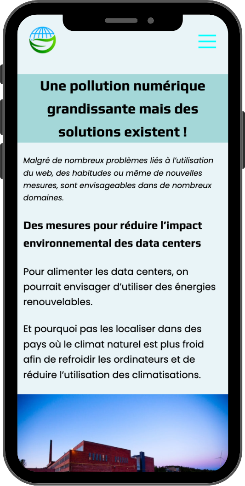
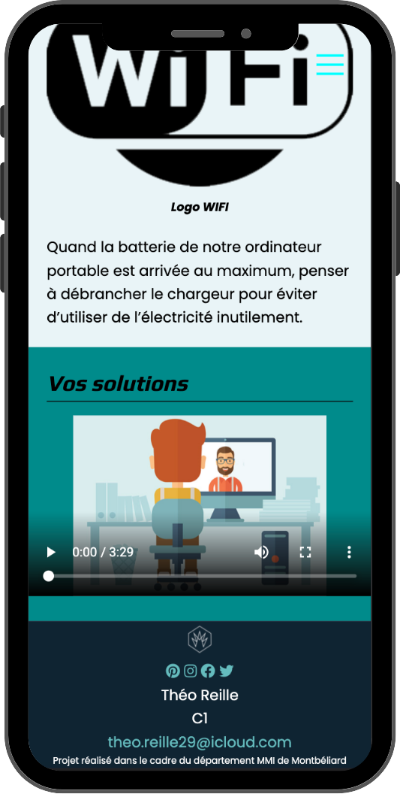

-

- 
- 

Site web dénonçant l’usage conséquent
du web et la pollution numérique. Il
propose également de nombreuses
solutions vertes.
du web et la pollution numérique. Il
propose également de nombreuses
solutions vertes.

Site Mobile First
Projet individuel
L’objectif de ce projet était de réaliser un site dénonçant la pollution numérique. La rédaction d’articles et de dossiers était également de mise. Par ailleurs, le projet ce décomposé en deux phases, la première était celle de maquettage avec la réalisation de la maquette du site, la rédaction d’un dossier de communication et d’une charte graphique. Enfin, il y a eu la phase de développement où nous devions intégrer le site en HTML/CSS.
Création de la maquette
Rédaction des articles
Production du dossier de communication / charte graphique
Présentation de la maquette
Intégration en HTML / CSS de la maquette
Présentation du site final